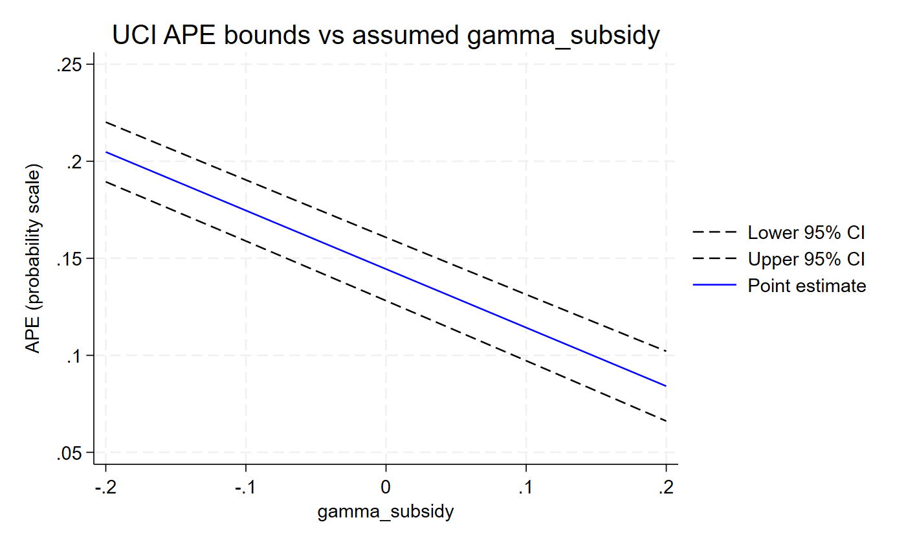

This page runs a first analysis of the example data with the Stata
command. The R version runs the same analysis
on the same file. The output below comes from apexog 0.20.1 in StataNow
19.5 (data-raw/site_examples.do in the R package’s
repository).
Install
net install apexog, from("https://raw.githubusercontent.com/jespernwulff/stata-apexog/main/")
help apexogapexog requires Stata 18 or later. It fits the control-function
probit itself (regress, probit,
fracreg, poisson or biprobit,
plus Mata) and does not need StataNow’s cfprobit.
The data and the question
use "https://raw.githubusercontent.com/jespernwulff/apexog/main/inst/extdata/promotion.dta", clear
describeThe data are simulated. The outcome promoted is binary.
Hours of training are endogenous: employees choose training
partly on an unobserved ability that also drives promotion. A training
subsidy shifts training and serves as the instrument;
tenure and manager are controls;
team identifies 200 teams.
The subsidy is only plausibly excluded: it might affect promotion directly. apexog asks how much such a direct effect, γ, would change the average partial effect (APE) of training on the probability of promotion.
A range for the violation: uci
The syntax follows ivregress and cfprobit:
outcome, controls, and the endogenous regressor with its instrument in
parentheses. Here the subsidy’s direct effect is assumed to lie between
−0.10 and 0.10 on the latent index:
Running UCI grid: 11 point(s) per instrument, 1 instrument(s), 11 total grid point(s).
------------------------------------------------------------------------------
Plausibly-exogenous APE bounds (CHR 2012, UCI method)
Estimator: cfprobit | First stage: linear | SE: Murphy-Topel | N = 4000
Endogenous: training
Target: APE of every endogenous regressor (default)
------------------------------------------------------------------------------
Baseline (gamma = 0):
APE(training) = 0.144457 (SE 0.008323) [ 0.128145, 0.160769]
Scale: 1 latent-index unit of gamma = 0.2091 pr. points per unit of Z (avg., baseline)
1 structural-latent unit of gamma = 1.1986 latent-index units (sigma_tilde = 0.8343)
UCI union over gamma grid (11 point(s) per IV):
gamma_subsidy range : [-0.1000, 0.1000] exact Pr scale: [-0.0209, 0.0209]
APE(training) bounds = [ 0.097219, 0.190375]
-------------------------------------------------------------------------------
Baseline: the APE with a valid instrument
(γ = 0). It equals
cfprobit promoted tenure manager (training = subsidy)followed bymargins, dydx(training), point estimate and standard error. The standard error is the Murphy–Topel two-step standard error. - Scale: one unit of γ on the latent index changes the probability of promotion by 0.209 per unit of the subsidy, on average. See Which scale for the violation?.
- UCI union: the union of the 95% confidence intervals over the eleven values of γ. For any violation in the range the APE lies between 0.097 and 0.190.
apexog is an estimation command. e(b) and
e(V) hold the baseline estimate and its variance, so
lincom, test and estimates store
work; the bounds are in e(lb_training) and
e(ub_training), the grid in e(grid):
------------------------------------------------------------------------------
promoted | Coefficient Std. err. z P>|z| [95% conf. interval]
-------------+----------------------------------------------------------------
(1) | .1444568 .0083227 17.36 0.000 .1281446 .160769
------------------------------------------------------------------------------With graph, apexog plots the estimate and its confidence
band against the assumed violation. Over ±0.20 the lower bound still
stays above zero:

A prior for the violation: ltz
Instead of a hard range you can give a prior. Here γ is normal with mean 0 and variance 0.0025:
apexog ltz promoted tenure manager (training = subsidy), mu(0) omega(0.0025) iterations(1000) seed(101)------------------------------------------------------------------------------
Plausibly-exogenous APE bounds (CHR 2012, LTZ method, gaussian prior)
Estimator: cfprobit | First stage: linear | SE: Murphy-Topel | N = 4000
Endogenous: training
Target: APE of every endogenous regressor (default)
------------------------------------------------------------------------------
Baseline (gamma = 0):
APE(training) = 0.144457 (SE 0.008323)
Scale: 1 latent-index unit of gamma = 0.2091 pr. points per unit of Z (avg., baseline)
1 structural-latent unit of gamma = 1.1986 latent-index units (sigma_tilde = 0.8343)
LTZ prior:
gamma_subsidy ~ N( 0.0000, 0.0025)
exact Pr scale of the draws: mean 0.0002, sd 0.0101
iterations = 1000
LTZ 95% intervals (sampling noise convolved with prior; CHR 2012 eq. 7):
APE(training) 95% CI = [ 0.109198, 0.176162]
Prior-only spread of the point APEs (sensitivity band, no sampling noise):
APE(training) 95% range = [ 0.114937, 0.174157]
------------------------------------------------------------------------------apexog draws γ 1,000 times, refits at every draw, and adds
each refit’s sampling noise to its estimate. The 95% CI
accounts for both the uncertainty about γ and the sampling
uncertainty; the prior-only range shows how far the
point estimate moves across the prior alone. The draws are in
e(gamma_sim), the refit estimates in
e(ape_sim) and the combined draws in
e(ape_sim_cnv).
The violation in probability points
With gunits(pr) every value of γ is read as a
change in the probability of the outcome per unit of the instrument. A
direct effect of at most 2 percentage points:
Scale: 1 latent-index unit of gamma = 0.2091 pr. points per unit of Z (avg., baseline)
1 structural-latent unit of gamma = 1.1986 latent-index units (sigma_tilde = 0.8343)
gunits(pr): user gamma values were probability points; divided by m_phi. Values below are latent units.
(first order; exact Pr-scale equivalents shown alongside)
UCI union over gamma grid (11 point(s) per IV):
gamma_subsidy range : [-0.0957, 0.0957] exact Pr scale: [-0.0200, 0.0200]
APE(training) bounds = [ 0.098562, 0.189088]Clustered standard errors
apexog uci promoted tenure manager (training = subsidy), gmin(-0.10) gmax(0.10) grid(11) vce(cluster team)Baseline (gamma = 0):
APE(training) = 0.144457 (SE 0.007325) [ 0.130099, 0.158814]
...
APE(training) bounds = [ 0.099292, 0.188552]Next steps
- A binary treatment, or an interaction of an endogenous treatment with a moderator: Binary treatments and interaction effects.
- Choosing between the range and the prior: Union of intervals or a prior?
- Every option:
help apexog, also on this site.